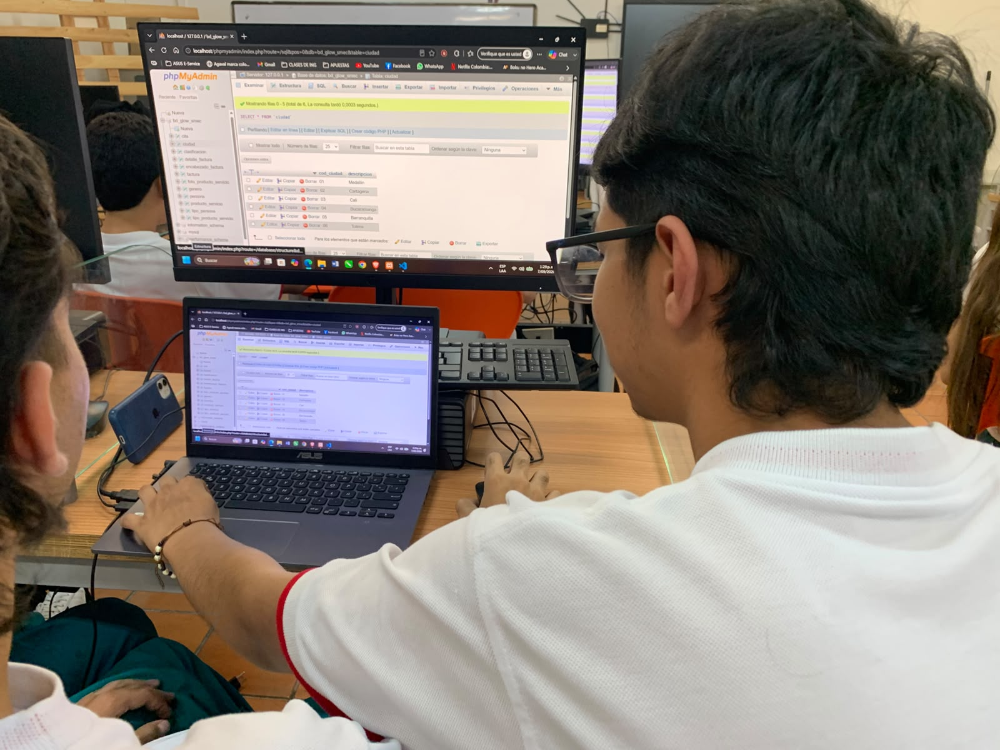
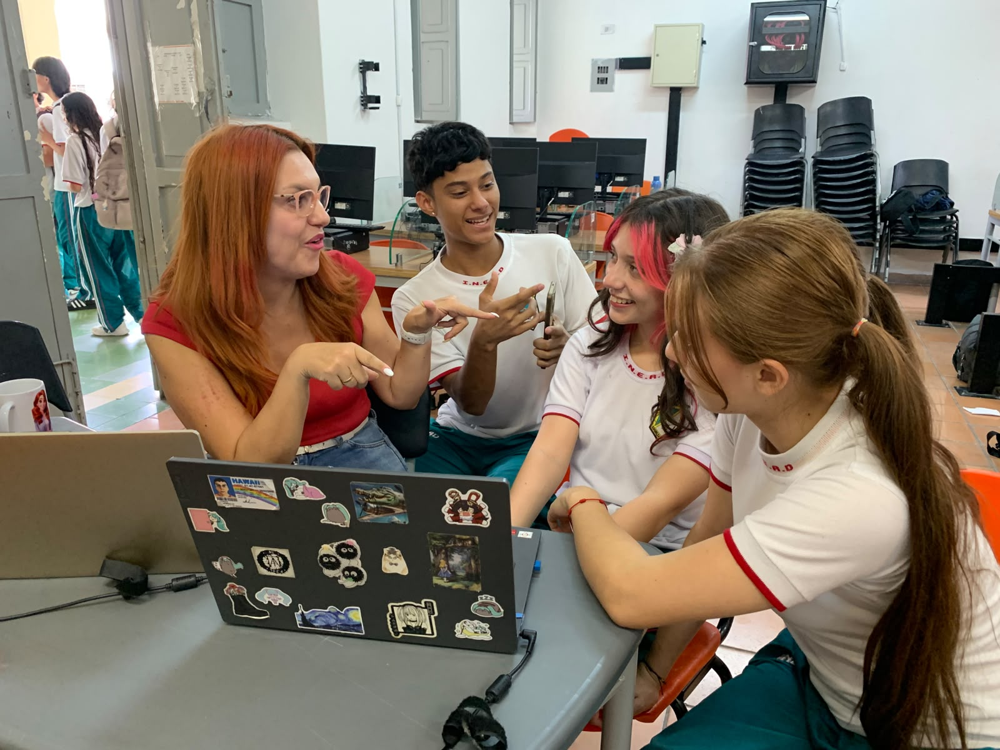
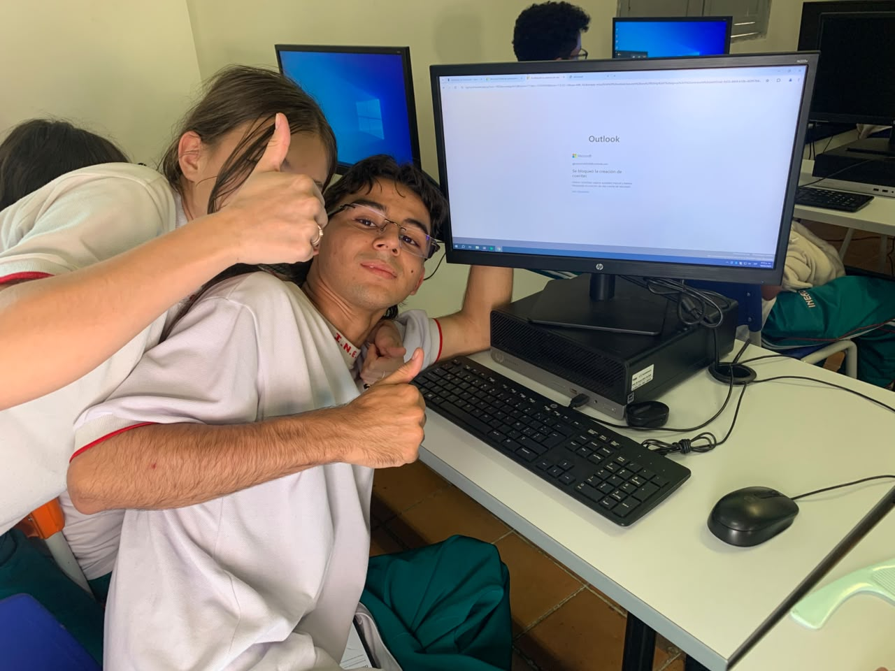

Domina el código que mueve al mundo con la
Media Técnica en Software
Transforma tu curiosidad en aplicaciones web reales, bases de datos interactivas y proyectos con Inteligencia Artificial. Prepárate desde el colegio para liderar la industria digital.
¿En qué consiste la Media Técnica?
Un puente directo entre la educación secundaria y la educación superior, enfocado en el desarrollo real de soluciones tecnológicas.
Desarrollo Web Fullstack
Aprende frontend moderno con HTML5, CSS, JavaScript y conceptos de interfaz, junto con backend estructurado.
Gestión de Bases de Datos
Diseño y administración de bases de datos relacionales con MySQL y phpMyAdmin para almacenar y consultar información de usuarios.

¿Qué puedes lograr estudiando esta técnica?
Desde la estructuración de bases de datos hasta la creación de plataformas completas: descubre todo lo que serás capaz de construir.
De Estudiante a Desarrollador de Software
Al estudiar esta técnica de software, adquieres las habilidades más demandadas de la cuarta revolución industrial:
- Crear aplicaciones completas: Plataformas de comercio, sistemas de gestión escolar, registros de usuarios y paneles administrativos.
- Dominar SQL y Servidores: Modelar entidades relacionales, escribir consultas complejas y mantener la integridad de la información.
- Ventaja universitaria gigante: Entrar a Ingeniería de Sistemas o Tecnología en Software con bases sólidas que te ponen años adelante.

Oportunidades que Tendrás
El software es el motor del presente y del futuro. Aprende con las herramientas más potentes del planeta como ChatGPT, Grok, Gemini, Claude Code, etc.

Un Sector con Alta Demanda y Sueldos Competitivos
Medellín se ha consolidado como el centro de innovación de América Latina gracias al Distrito Especial de Ciencia, Tecnología e Innovación. Las empresas locales e internacionales buscan constantemente talento joven capaz de construir código limpio y solucionar problemas con tecnología.
Habilidades de IA para Acelerar Código
Aprende a comunicarte con modelos generativos (Prompt Engineering) para corregir errores, crear pruebas y prototipar en minutos.
Trabajo Remoto & Global
El código es universal. Con una computadora e internet puedes trabajar para empresas de cualquier rincón del mundo desde Medellín.
Emprendimiento Tech
Si tienes una idea, la Media Técnica te enseña a convertirla en una startup o plataforma funcional sin depender de otros.
Una Experiencia que Marca la Diferencia
Aprender a programar es un camino retador pero emocionante, guiado por docentes apasionados y un ambiente donde todos nos apoyamos.
Docentes Cercanos y Pacientes.
El aula se convierte en un espacio seguro para equivocarse sin miedo: porque en programación, cada error es solo una oportunidad para aprender algo nuevo.

¡Aquí aprenderás mucho y te divertirás!
Aquí la programación se vive con dinamismo, compañerismo, retos interactivos y muchas risas.

Aquí aprenderás mucho y te divertirás
No necesitas ser un genio de las matemáticas ni haber escrito código antes. Lo único que necesitas es curiosidad y ganas de crear cosas increíbles con tus propias manos.

Aprende mientras juegas y colaboras
La programación en la vida real es un deporte de equipo. En nuestras clases programamos en equipos, compartimos ideas y encontramos soluciones juntos en las pantallas de código.
Semilleros Gratuitos de Software en Medellín
Medellín cuenta con uno de los ecosistemas públicos y gratuitos de formación tecnológica más amplios de Colombia. Conoce los semilleros, bootcamps y cursos a los que puedes acceder sin pagar un solo peso.
Centros del Valle del Software (CVS)
Espacios físicos dotados de tecnología en las 16 comunas y 5 corregimientos de Medellín. Ofrecen semilleros barriales de programación web, robótica, modelado 3D y lógica computacional para jóvenes escolares.
Ruta N: Semilleros de Código e Innovación
El corazón de la innovación en Medellín. Ruta N lidera iniciativas de formación acelerada en habilidades digitales del siglo XXI, algoritmia, ciencia de datos e Inteligencia Artificial, conectando a los jóvenes con empresas tech.
Talento Tech: Bootcamps Intensivos
La estrategia nacional de campamentos intensivos de entrenamiento tecnológico bajo metodología bootcamp. Aprende Desarrollo Fullstack, Inteligencia Artificial, Blockchain, Análisis de Datos y Cloud con certificación oficial.
SENA Tecnoparque & Cursos de Software
Cursos complementarios gratuitos en desarrollo de software, Python, bases de datos SQL y desarrollo de apps móviles. Además, la Red Tecnoparque en Medellín asesora proyectos tecnológicos de estudiantes de colegio.
Semilleros Universitarios Abiertos
El ITM, la I.U. Pascual Bravo, el Politécnico Jaime Isaza Cadavid y la Universidad EAFIT abren semilleros y clubes juveniles de robótica, algoritmia competitiva y desarrollo web para estudiantes de grados 9°, 10° y 11°.
Academia Digital & Arroba Medellín
Plataforma virtual de la ciudad con rutas de autoaprendizaje guiado en pensamiento computacional, lenguajes de programación frontend, ciberseguridad básica y herramientas de inteligencia artificial para jóvenes.